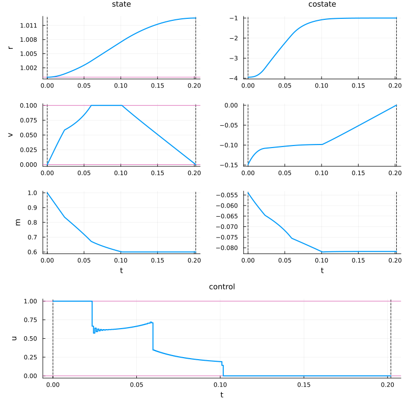
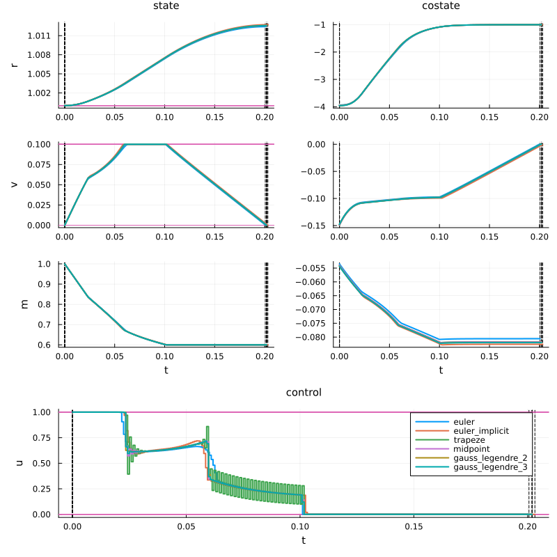

Discretisation methods
In this tutorial, we will explore the different discretisation methods available in the OptimalControl.jl package. These methods are used to convert a continuous-time optimal control problem (OCP) into a discrete-time nonlinear programming (NLP) problem, which can then be solved using numerical optimization techniques.
Let us import the necessary packages and define the optimal control problem (Goddard problem) we will use as an example throughout this tutorial.
using BenchmarkTools # for benchmarking
using DataFrames # to store the results
using OptimalControl # to define the optimal control problem and more
using NLPModels # to retrieve information about the NLP problem
using NLPModelsIpopt # to solve the problem via a direct method
using Plots # to plot the solution
t0 = 0 # initial time
r0 = 1 # initial altitude
v0 = 0 # initial speed
m0 = 1 # initial mass
vmax = 0.1 # maximal authorized speed
mf = 0.6 # final mass to target
# Goddard problem function
function goddard_problem()
ocp = @def begin # definition of the optimal control problem
tf ∈ R, variable
t ∈ [t0, tf], time
x = (r, v, m) ∈ R³, state
u ∈ R, control
x(t0) == [r0, v0, m0]
m(tf) == mf
0 ≤ u(t) ≤ 1
r(t) ≥ r0
0 ≤ v(t) ≤ vmax
ẋ(t) == F0(x(t)) + u(t) * F1(x(t))
r(tf) → max
end
return ocp
end
ocp = goddard_problem()
# Dynamics
Cd = 310
Tmax = 3.5
β = 500
b = 2
F0(x) = begin
# Uncontrolled dynamics: gravity and drag
r, v, m = x
D = Cd * v^2 * exp(-β*(r - 1)) # Aerodynamic drag
return [ v, -D/m - 1/r^2, 0 ] # [dr/dt, dv/dt, dm/dt]
end
F1(x) = begin
# Control dynamics: thrust contribution
r, v, m = x
return [ 0, Tmax/m, -b*Tmax ] # [dr/dt, dv/dt, dm/dt] due to thrust
endDiscretisation schemes
When calling solve, the option scheme=... can be used to specify the discretization scheme. In addition to the default implicit :midpoint method, other available options include the implicit :trapeze method (also known as Crank–Nicolson), and Gauss–Legendre collocation schemes with 2 and 3 stages: :gauss_legendre_2 and :gauss_legendre_3, of order 4 and 6 respectively. Note that higher-order methods typically result in larger NLP problems for the same number of time steps, and their accuracy also depends on the smoothness of the problem.
Let us first solve the problem with the default :midpoint method and display the solution.
sol = solve(ocp; scheme=:midpoint, display=false)
@assert successful(sol) "Solution failed"
plot(sol; size=(800, 800))
Let us now compare different discretization schemes to evaluate their accuracy and performance. See the Strategy options for information on default values for parameters like tol.
# Solve the problem with different discretization methods
solutions = []
data = DataFrame(
Scheme=Symbol[],
Time=Float64[],
Objective=Float64[],
Iterations=Int[]
)
schemes = [
:euler,
:euler_implicit,
:trapeze,
:midpoint,
:gauss_legendre_2,
:gauss_legendre_3
]
for scheme in schemes
bt = @btimed solve($ocp; scheme=$scheme, tol=1e-8, display=false)
local sol = bt.value
#@assert successful(sol) "Solution failed for scheme=$scheme"
push!(solutions, (scheme, sol))
push!(data, (
Scheme=scheme,
Time=bt.time,
Objective=objective(sol),
Iterations=iterations(sol)
))
end
println(data)6×4 DataFrame
Row │ Scheme Time Objective Iterations
│ Symbol Float64 Float64 Int64
─────┼───────────────────────────────────────────────────
1 │ euler 0.230261 1.01242 30
2 │ euler_implicit 0.226355 1.01273 29
3 │ trapeze 0.30317 1.01258 30
4 │ midpoint 0.339852 1.01258 31
5 │ gauss_legendre_2 1.00437 1.01258 24
6 │ gauss_legendre_3 2.45606 1.01259 25# Plot the results
x_style = (legend=:none,)
p_style = (legend=:none,)
u_style = (legend=:topright,)
styles = (state_style=x_style, costate_style=p_style, control_style=u_style)
plt = plot()
for (i, (scheme, sol)) in enumerate(solutions)
plt = plot!(sol; label=string(scheme), color=i, styles...)
end
plot(plt; size=(800, 800))
Large problems and AD backend
For some large problems, you may notice that the solver takes a long time before the iterations actually begin. This is due to the computation of sparse derivatives — specifically, the Jacobian of the constraints and the Hessian of the Lagrangian — which can be quite costly. One possible alternative is to set the option backend=:manual in the modeler, which uses simpler sparsity patterns. The resulting matrices are faster to compute but are also less sparse, so this represents a trade-off between automatic differentiation (AD) preparation time and the efficiency of the optimization itself.
disc = OptimalControl.Collocation(grid_size=1000, scheme=:gauss_legendre_3)
mod = OptimalControl.ADNLP(backend=:manual)
sol = OptimalControl.Ipopt()
solve(ocp; discretizer=disc, modeler=mod, solver=sol)▫ This is OptimalControl 2.0.4, solving with: collocation → adnlp → ipopt (cpu)
📦 Configuration:
├─ Discretizer: collocation (grid_size = 1000, scheme = gauss_legendre_3)
├─ Modeler: adnlp (backend = manual)
└─ Solver: ipopt
▫ This is Ipopt version 3.14.19, running with linear solver MUMPS 5.8.2.
Number of nonzeros in equality constraint Jacobian...: 192028
Number of nonzeros in inequality constraint Jacobian.: 0
Number of nonzeros in Lagrangian Hessian.............: 135025
Total number of variables............................: 15004
variables with only lower bounds: 1001
variables with lower and upper bounds: 4001
variables with only upper bounds: 0
Total number of equality constraints.................: 12004
Total number of inequality constraints...............: 0
inequality constraints with only lower bounds: 0
inequality constraints with lower and upper bounds: 0
inequality constraints with only upper bounds: 0
iter objective inf_pr inf_du lg(mu) ||d|| lg(rg) alpha_du alpha_pr ls
0 1.0100000e+00 2.22e+00 2.00e+00 0.0 0.00e+00 - 0.00e+00 0.00e+00 0
1 1.0330447e+00 7.32e+00 4.54e+04 -1.0 7.43e+00 - 1.05e-01 9.36e-01f 1
2 1.0530859e+00 6.59e+00 4.13e+04 -0.1 2.25e+01 - 3.70e-01 9.79e-02f 1
3 1.0205727e+00 2.69e+00 2.03e+04 0.1 8.16e+00 - 1.00e+00 5.95e-01h 1
4 1.0109042e+00 2.89e-01 4.10e+03 -0.1 2.41e+00 - 1.00e+00 9.89e-01h 1
5 1.0146582e+00 2.08e-01 2.60e+06 0.9 1.76e+01 - 9.55e-01 1.48e-01f 1
6 1.0058474e+00 1.29e-01 7.09e+04 1.0 1.02e+00 - 1.00e+00 9.90e-01h 1
7 1.0072920e+00 2.42e-02 3.53e+03 0.5 3.01e-01 - 1.00e+00 1.00e+00f 1
8 1.0072625e+00 1.36e-05 5.60e+03 -1.0 2.65e-02 - 1.00e+00 1.00e+00h 1
9 1.0072601e+00 5.35e-07 1.02e+00 -2.9 8.84e-03 - 1.00e+00 1.00e+00h 1
iter objective inf_pr inf_du lg(mu) ||d|| lg(rg) alpha_du alpha_pr ls
10 1.0072624e+00 1.12e-07 8.96e-04 -4.8 6.04e-03 - 1.00e+00 1.00e+00h 1
11 1.0076060e+00 2.95e-03 1.29e+01 -5.7 4.33e-01 - 9.91e-01 1.00e+00h 1
12 1.0096103e+00 8.30e-02 1.57e+01 -6.1 1.83e+00 - 1.00e+00 8.80e-01h 1
13 1.0115018e+00 7.67e-02 1.01e-01 -6.2 1.11e+00 - 9.96e-01 1.00e+00h 1
14 1.0121023e+00 1.32e-02 2.38e-02 -6.6 5.14e-01 - 1.00e+00 9.99e-01h 1
15 1.0123761e+00 1.57e-02 8.69e-01 -7.1 1.13e+00 - 1.00e+00 9.44e-01h 1
16 1.0124643e+00 5.43e-03 4.38e-01 -7.3 9.88e-01 - 1.00e+00 9.02e-01h 1
17 1.0125277e+00 3.58e-03 7.86e-06 -7.6 7.61e-01 - 1.00e+00 1.00e+00h 1
18 1.0125453e+00 1.15e-03 1.05e-01 -7.8 1.10e+00 - 1.00e+00 8.91e-01h 1
19 1.0125605e+00 8.35e-04 3.83e-02 -8.1 1.15e+00 - 9.41e-01 1.00e+00h 1
iter objective inf_pr inf_du lg(mu) ||d|| lg(rg) alpha_du alpha_pr ls
20 1.0125618e+00 8.05e-05 1.28e-02 -8.2 6.15e-04 -4.0 1.00e+00 9.04e-01h 1
21 1.0125622e+00 4.78e-03 1.56e-07 -8.4 4.67e-03 -4.5 1.00e+00 1.00e+00h 1
22 1.0125572e+00 6.95e-03 6.25e-08 -8.4 5.54e-03 -5.0 1.00e+00 1.00e+00H 1
23 1.0125597e+00 6.73e-03 9.43e-08 -8.4 1.28e-02 -5.4 1.00e+00 1.00e+00H 1
24 1.0125657e+00 2.96e-03 3.21e-03 -8.5 2.24e+00 - 5.05e-01 5.41e-01h 1
25 1.0125708e+00 2.31e-04 1.63e-03 -8.5 1.85e+00 - 1.00e+00 9.77e-01f 1
26 1.0125723e+00 3.72e-02 5.18e-07 -8.7 5.25e-02 -5.0 1.00e+00 1.00e+00h 1
27 1.0125741e+00 8.96e-03 1.37e-02 -8.8 1.10e+00 - 1.00e+00 7.59e-01h 1
28 1.0125765e+00 1.83e-04 9.87e-04 -9.1 1.14e+00 - 9.88e-01 1.00e+00h 1
29 1.0125780e+00 2.13e-04 1.33e-07 -9.6 1.47e+00 - 1.00e+00 1.00e+00h 1
iter objective inf_pr inf_du lg(mu) ||d|| lg(rg) alpha_du alpha_pr ls
30 1.0125784e+00 2.61e-04 6.11e-08 -10.1 2.18e+00 - 1.00e+00 1.00e+00h 1
31 1.0125785e+00 1.79e-04 2.58e-04 -10.7 1.96e+00 - 1.00e+00 9.56e-01h 1
32 1.0125785e+00 9.12e-05 5.53e-09 -11.0 1.16e+00 - 1.00e+00 1.00e+00h 1
Number of Iterations....: 32
(scaled) (unscaled)
Objective...............: -1.0125785437912160e+00 1.0125785437912160e+00
Dual infeasibility......: 5.5299001968538998e-09 5.5299001968538998e-09
Constraint violation....: 5.1261295208604452e-10 9.1173242812825350e-05
Variable bound violation: 8.1717232051227421e-31 8.1717232051227421e-31
Complementarity.........: 1.6225332657065354e-11 1.6225332657065354e-11
Overall NLP error.......: 5.5299001968538998e-09 9.1173242812825350e-05
Number of objective function evaluations = 36
Number of objective gradient evaluations = 33
Number of equality constraint evaluations = 36
Number of inequality constraint evaluations = 0
Number of equality constraint Jacobian evaluations = 33
Number of inequality constraint Jacobian evaluations = 0
Number of Lagrangian Hessian evaluations = 32
Total seconds in IPOPT = 22.184
EXIT: Optimal Solution Found.This explicit approach with strategy instances is less high-level than the descriptive method used earlier. It provides more control over the solving process and is detailed in the explicit mode documentation.
Let us now compare the performance of the two backends. We will use the @btimed macro from the BenchmarkTools package to measure the time taken for both the preparation of the NLP problem and the execution of the solver. Separating these measurements allows us to understand whether the bottleneck is in the discretization/modeling phase (which depends on the AD backend) or in the solver phase (which depends on the sparsity of the matrices). We use a lower-level approach with explicit strategy instances to separately measure the discretization/modeling time and the solver time.
# DataFrame to store the results
data = DataFrame(
Backend=Symbol[],
NNZO=Int[],
NNZJ=Int[],
NNZH=Int[],
PrepTime=Float64[],
ExecTime=Float64[],
Objective=Float64[],
Iterations=Int[]
)
# The different AD backends to test
backends = [:optimized, :manual]
# Loop over the backends
for adnlp_backend in backends
# Create strategy instances
discretizer = OptimalControl.Collocation(grid_size=1000, scheme=:gauss_legendre_3)
modeler = OptimalControl.ADNLP(backend=adnlp_backend)
solver = OptimalControl.Ipopt(print_level=0)
# Initial guess
init = build_initial_guess(ocp, nothing)
# Discretize and build NLP model
# This lower-level approach with discretize/nlp_model/solve is detailed in the [tutorial on direct transcription](@ref tutorial-nlp)
bt = @btimed begin
docp = discretize($ocp, $discretizer)
nlp_model(docp, $init, $modeler)
end
prepa_time = bt.time
nlp = bt.value
# Get the number of non-zero elements
nnzo = get_nnzo(nlp) # Gradient of the Objective
nnzj = get_nnzj(nlp) # Jacobian of the constraints
nnzh = get_nnzh(nlp) # Hessian of the Lagrangian
# Solve the problem
bt = @btimed solve($nlp, $solver; display=false)
exec_time = bt.time
nlp_sol = bt.value
# Store the results in the DataFrame
push!(data,
(
Backend=adnlp_backend,
NNZO=nnzo,
NNZJ=nnzj,
NNZH=nnzh,
PrepTime=prepa_time,
ExecTime=exec_time,
Objective=nlp_sol.objective,
Iterations=nlp_sol.iter
)
)
end
println(data)2×8 DataFrame
Row │ Backend NNZO NNZJ NNZH PrepTime ExecTime Objective Iterations
│ Symbol Int64 Int64 Int64 Float64 Float64 Float64 Int64
─────┼─────────────────────────────────────────────────────────────────────────────
1 │ optimized 15004 87004 105001 6.00719 98.7142 1.01258 185
2 │ manual 15004 192028 135025 0.413495 17.3111 1.01258 32Explicit time grid
The option time_grid=... allows you to provide the full time grid vector t0, t1, ..., tf, which is especially useful if a non-uniform grid is desired. In the case of a free initial and/or final time, you should provide a normalized grid ranging from 0 to 1. Note that time_grid overrides grid_size if both options are specified.
sol = solve(ocp; time_grid=[0, 0.1, 0.5, 0.9, 1], display=false)
println(time_grid(sol))[0.0, 0.022086440107996572, 0.11043220053998286, 0.19877796097196915, 0.22086440107996572]